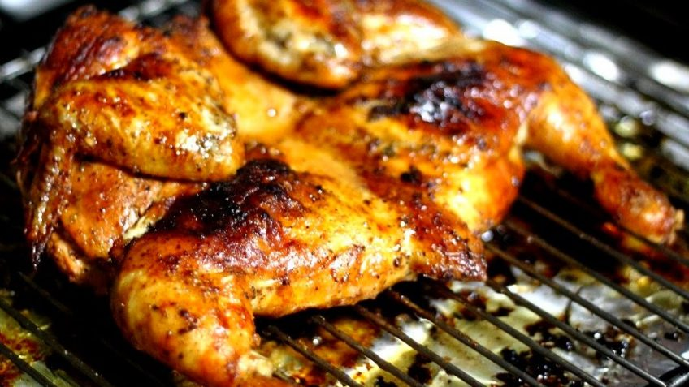

Odin Recipes Website Exercise
Pollo a la parrilla!

Wow! This is the recipe for Pollo a la parrilla!, the preferred poultry meat in argentine asado.
If beef is your thing, then Asado de tira or Vacío a la parrilla could be just the right thingy.
Pollo is the favorite poultry meat, unavoidable in argentine asado. Inexpensive and easy to cook, it pleases kids and people that does not eat red meat.
Unlike beef, chicken must be thoroughly cooked before serving. To serve a bleeding chicken leg is worse than a capital sin.
What you will need:
- A whole chicken
- Butter, 50 g
- Mustard, 3 tsp
- Lemon juice, 50 cc
- Salt and pepper
Come on, let's burn the bastard!
- Fire up the coal!
- While still burning with high flame, put the grill on top of the fire and let it heat.
- When hot, use crumpled old newspapers to clean the grill, removing all remains of past asados.
- Wait for the coal to turn to white embers. That's the right time!
- Set the grill beside the embers. Use a shovel to put enough embers below the grill to make a thin layer.
- While the embers get to the right point, lay the chicken on a cutting board and cut the chest in half.
- Open the chicken, turn it over and press down with your hands to flatten it. The thing is dead already, show no mercy! Add salt for both sides.
- In a pot on the stove, mix the butter, mustard and lemon juice. Add salt and pepper as desired. Melt everything together and put aside.
- Place the chicken on the heated clean grill with the skin facing up.
- Use a brush to paint the chicken with the butter/mustard/lemon dressing. Repeat every 10 minutes.
- Cook for about 30 minutes, then turn over. Brush with the dressing and cook for another 35 minutes.
- When the tendons of the legs break, the chicken is ready
- Do not leave the pollo a la parrilla unattended! Do not go away, watch a movie or mow the lawn... Cooking pollo asado is a dire responsibility, you must make sure to keep the temperature right all the time, adding embers as required!
- Chop in as many pieces as suits your taste and serve immediately, before it gets cold.
Go back to Home